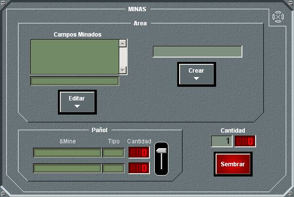

En el panel de detalle de Minas se muestra, en la parte inferior izquierda, los dos tipos de minas disponibles, y la cantidad en el pañol de cada tipo. En la parte superior se muestra la lista de zonas minadas ya creadas.
Mientras esté abierto este panel, se presentará en la Pantalla Táctica gráficamente las zona minada seleccionada en la lista y las minas sembradas dentro de esta zona.

Desde este panel se pueden realizar las siguientes acciones:
- Introducir la cantidad de minas a lanzar simultáneamente.
- Activar / desactivar la operación de siembra de minas en una zona minada. Al pulsar el botón Sembrar, se activa la siembra de la cantidad de minas especificada del tipo seleccionado, en posiciones aleatorias dentro de la zona minada seleccionada, y siempre que la unidad se mantenga a menos de 1000 yardas (distancia configurable en Galeon.ini) de todos los puntos de dicha zona. Mientras esta operación esté activa, se mantienen iluminado este el botón Sembrar. Si finaliza la siembra de la cantidad de minas especificada, o bien si se pulsa de nuevo este botón, se desactiva la operación de siembra de minas.
Cada zona minada se asocia a un único tipo de minas, es decir si se desea sembrar minas en una zona creada, sólo podrá hacerse del tipo de minas con el que se sembró minas por primera vez. Por tanto, para tener distintas minas en una misma área geográfica, se deberán crear distintas zonas minadas en la misma.
- Crear o Editar una zona minada. Al seleccionar una zona minada y pulsar Editar, ésta se muestra en la Pantalla Táctica en modo edición. Si se introduce un nombre y se pulsa Crear, se activa la creación gráfica de zona sobre la Pantalla Táctica.